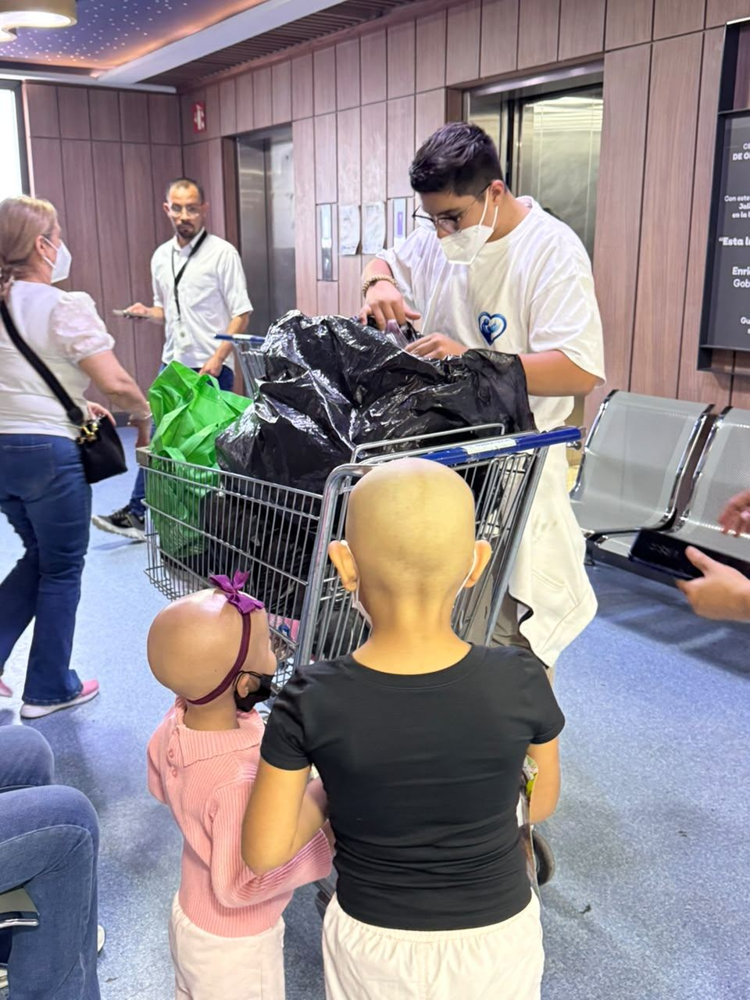
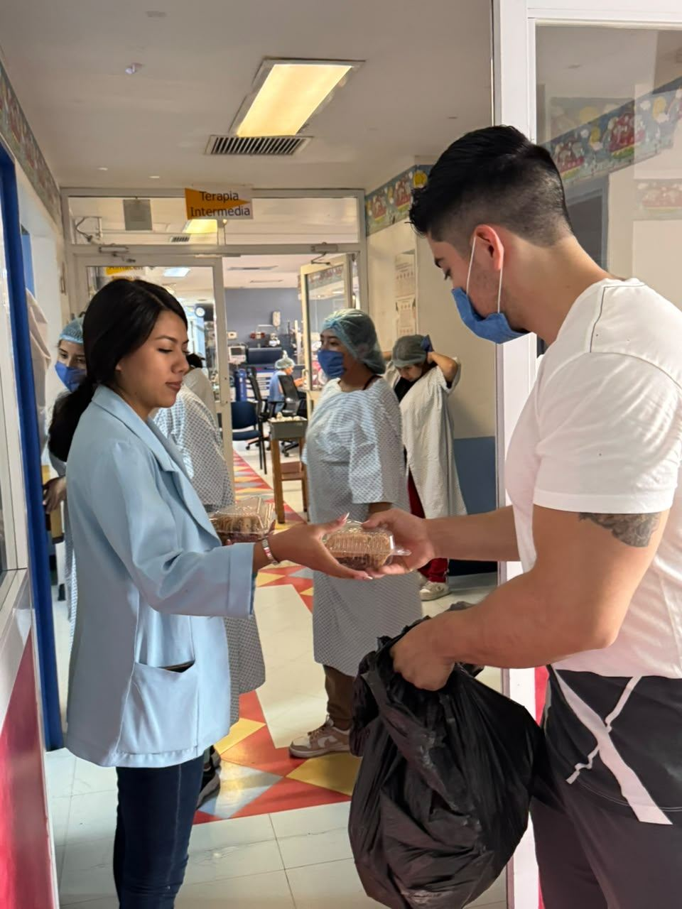
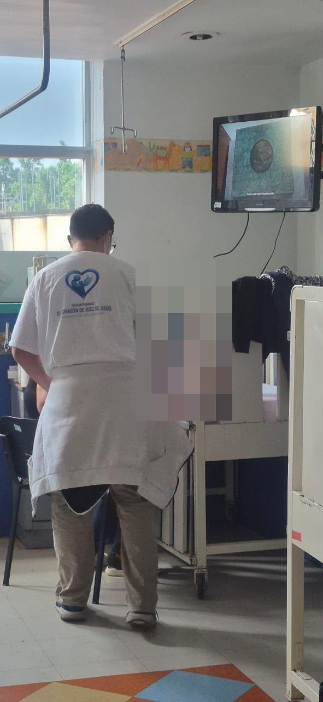
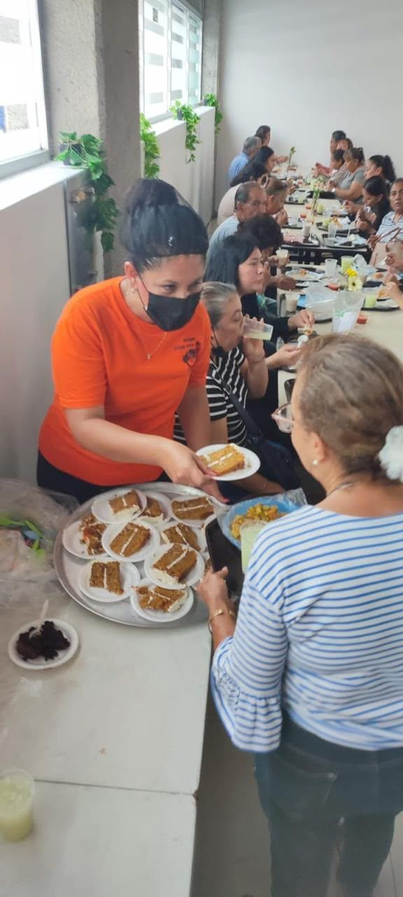
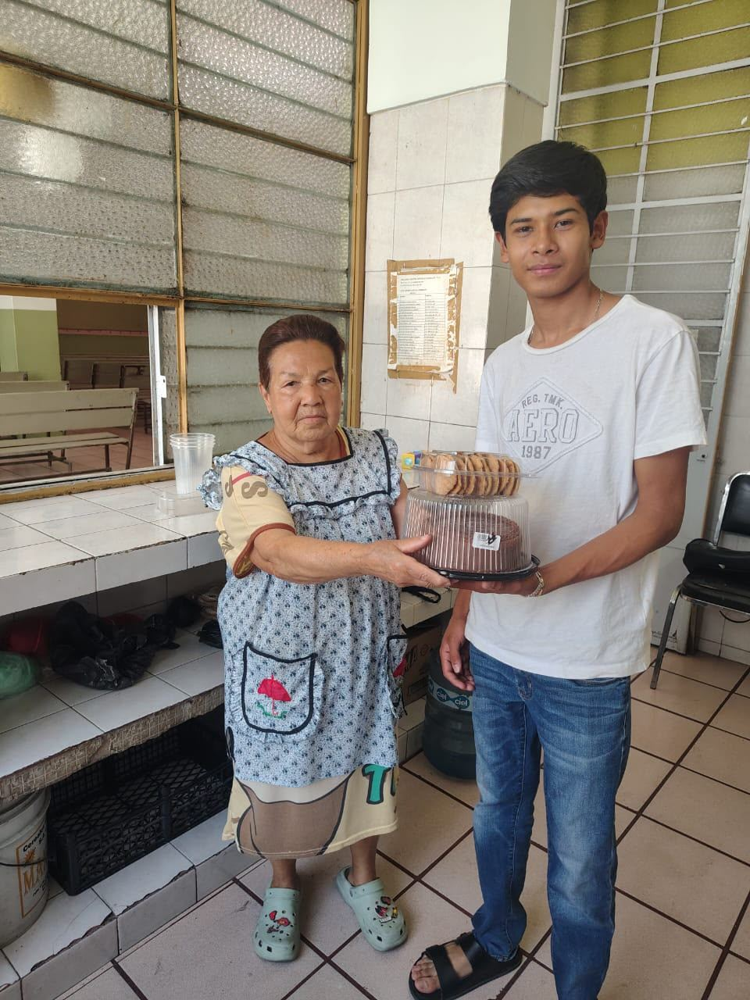
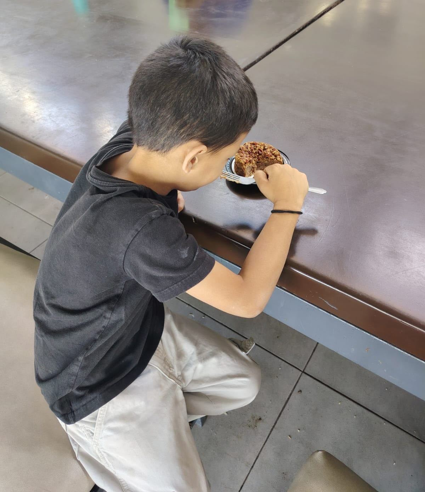
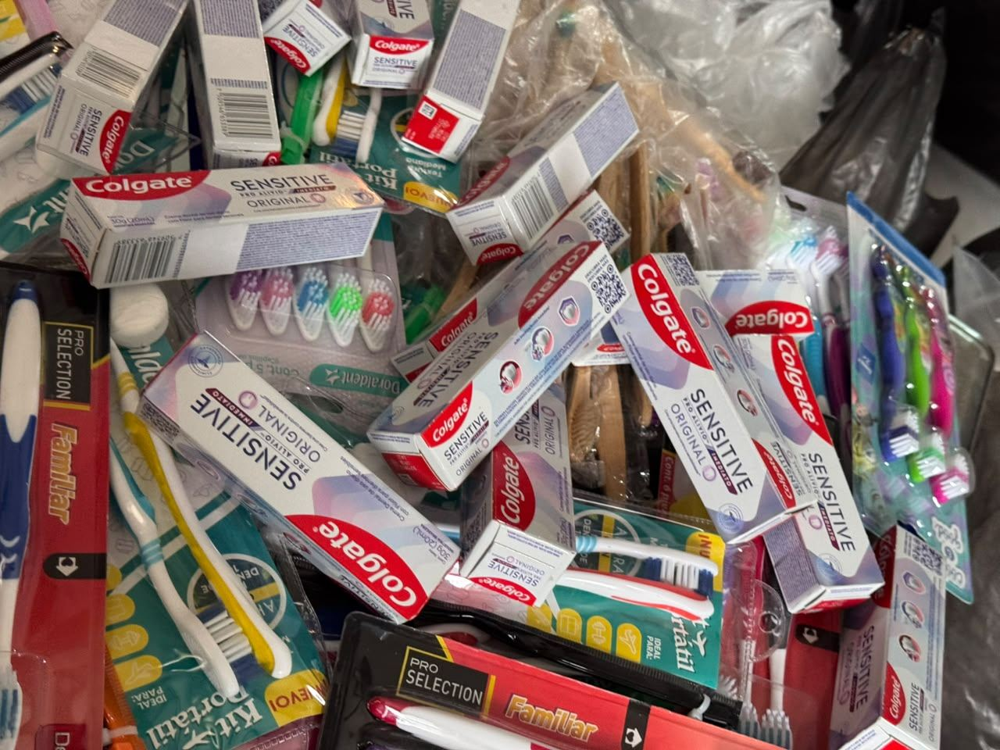
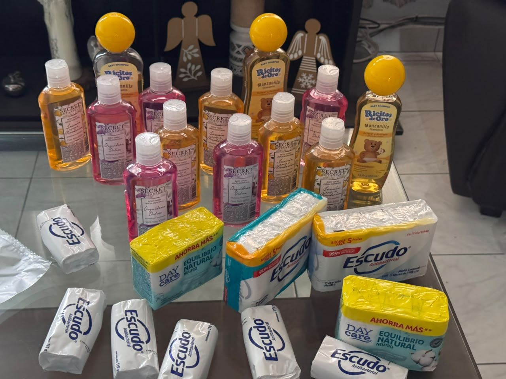
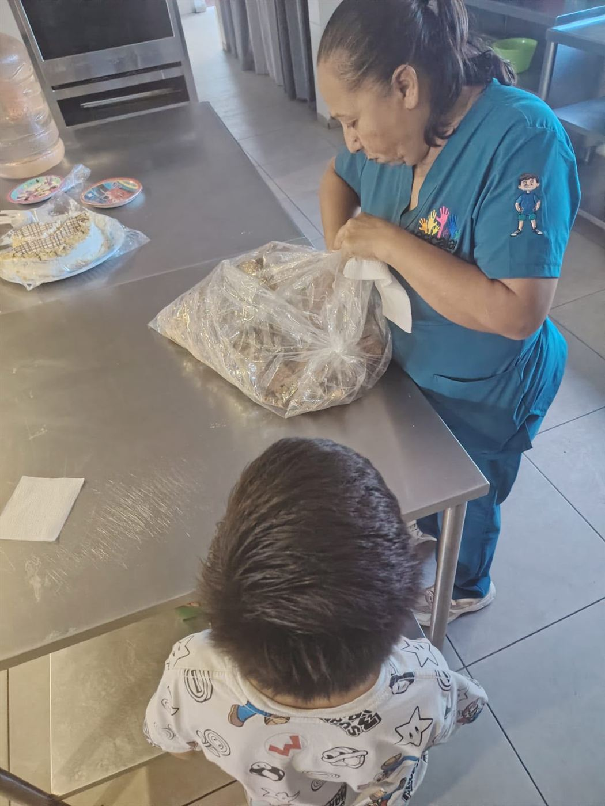

Boletín de transparencia · N.º 1
Lo que hicimos con tu confianza
Periodo reportado: mayo – julio de 2026 · Guadalajara, Jalisco
Para empezar
Por qué existe este boletín
Quien nos da dinero, insumos o tiempo tiene derecho a saber exactamente qué hicimos con ello. Este es el primer número de un ejercicio que repetiremos cada trimestre: contar, con evidencia, en qué se convirtió cada apoyo. Sin adornos y sin exageraciones.
Todas las fotografías de este boletín protegen la identidad de las niñas y los niños: verás manos, espaldas y donaciones, nunca el rostro de un menor de edad.
Acción 1
Acompañamiento y entregas en el Hospital Civil
Continuamos la presencia del voluntariado en el Hospital Civil Nuevo «Dr. Juan I. Menchaca», con visitas de acompañamiento en el área pediátrica y entrega de alimentos e insumos a las familias que pasan estancias largas junto a sus hijas e hijos, incluyendo el área de oncología.



Acción 2
Alimento en comedores y comunidades
Apoyamos comedores comunitarios que atienden a familias y personas adultas mayores, con entrega y servicio de alimentos. La convivencia también es parte del apoyo: sentarse a la mesa con dignidad importa tanto como el plato.



Acción 3
Donaciones en especie recibidas y entregadas
Durante el periodo recibimos y canalizamos, entre otros apoyos:
- Kits de higiene dental (pastas y cepillos nuevos).
- Artículos de aseo personal para estancias hospitalarias largas.
- Jugos individuales y despensas para familias del hospital.



Pendiente de validación: las cantidades exactas por rubro (número de kits, despensas y raciones) se publicarán en la versión final de este boletín, con el visto bueno de la mesa directiva.
Acción 4
Derechos que ahora tienen palabras: la campaña avanza
Con el respaldo de un dictamen jurídico elaborado por el servicio social de Derecho, publicamos las primeras infografías de la serie «Derechos en Formato Ciudadano», que traducen a lenguaje cotidiano los cinco ejes de derechos de la niñez con cáncer en el hospital:
Las infografías se colocarán en salas de espera y áreas comunes del hospital, y se pueden descargar gratis en la sección Derechos en Formato Ciudadano del sitio.
Lo que sigue
Próximos pasos
- Completar la serie de infografías (piezas 2 y 3) y llevarlas impresas al hospital.
- Talleres breves a madres, padres y cuidadores sobre exigibilidad de estos derechos.
- Publicar la versión validada de este boletín con cifras por rubro.